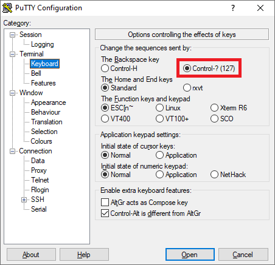

Editing, saving and executing files
This section teaches you how to edit, save and execute files.
1. REPL interface
To keep things simple in the previous example, we entered code directly in the terminal at the Maix prompt which was executed immediately upon pressing the Enter key. Such interactive command line interfaces are often referred to as REPL（Read Eval Print Loop). MaixPy's REPL interface operates similar to most other command line interfaces except that the supported syntax is MicroPython
While MaixPy's REPL interface is simple and convenient for small tasks, it soon becomes annoying to re-enter your code each time you want to run it. The solution is to save your code to a file, and then execute the file. The remainder of this page describes that process.
2. MaixPy file system
MaixPy devices have an internal file system which can access both internal and external memories. During boot, the device will mount any external memory cards formatted with either SPIFFS or FAT file systems, and add them to the internal file system as the /flash or /sd directories respectively.
NOTES:
SPIFFS cards are by default assigned to 3MB SPIFFS (starting at flash address 0xD00000). When detected at boot, SPIFFS devices automatically appear as the /flash directory within the device's internal file system. Currently the SPIFFS implementation in MaixPy does not support the creation of directories.
FAT formatted SD (TF) cards are supported, but FAT32 or exFAT formatted cards are not currently supported. When detected at boot, FAT formatted cards will be automatically mounted and appear as the /sd directory in the device's internal file system.
It should be noted that the root directory is only used to mount the SD card or SPIFFS flash card. All other file operations happen in the /flash or /sd directories, as determined by the format of the memory card discovered at boot time.
3. Navigating the file system
In MaixPy's REPL interface and in code the following os commands can be used to navigate directories and manage files.
| Command | Description | Example |
|---|---|---|
os.chdir() |
changes the current directory | os.chdir("/flash") |
os.listdir() |
list the files in the current directory | os.listdir() |
os.listdir(path) |
list the files in another directory | os.listdir("/sd") |
os.getcwd() |
return the current working directory | os.getcwd() |
os.rename(old_path, new_path) |
rename a file | os.rename("./blue.py", "./aaah.py") |
os.remove(path) |
remove a file | os.remove("./herring.py") |
For a complete list of os commands refer to the MicroPython documentation
4. Editing and saving files
There are a number of ways you can edit and save files described below as Methods A through C
4.1. Method A: Edit and save files using the pye editor built into MaixPy
MaixPy includes a built-in open source editor Micropython Editor(pye)
At the REPL interface enter pye("hello.py") to create a file and enter the edit mode. Keyboard shortcuts and other instructions can be found here
Enter the following code:
print("hello maixpy")
When you have finished editing, press Ctrl+S and then press Enter to save, and then press Ctrl+Q to exit the editor.
Note : The pye editor has certain requirements of the connected terminal. For intuitive operation the BackSpace key should be configured to send Ctrl+?, otherwise the BackSpace key will function as Ctrl+H (ie: character replacement).
Linux users are recommended to use minicom. Use sudo minicom -s to set the reference to the previous tutorial
Windows users can use PuTTY which supports Backspace key configuration. 
{kind=link}
Note Typing Shift-Backspace will cause PuTTY to send whichever code isn't configured as the default.
Alternatively, Xshell users can use:
File → Properties → Terminal → Keyboard,
Change the delete and backspace sequences to ASCII 127.
4.2. Method B: Read files to PC by uPyLoader, then download to board after editing
This method uses the uPyLoader utility
Download the executable: release

Select the serial port and click the Connect button to connect the board
The first time you run the software, you need to initialize it. Click File->Init transfer files to complete the initialization. This will create two files in the board, __upload.py and __download.py.
Then double click file name to read and edit, then click the save button to download the file to board
4.3. Method C: Read files to PC by rshell, edit, and then save back to board
Install rshell first according to the doc of rshell
sudo apt-get install python3-pip
sudo pip3 install rshell
rshell -p /dev/ttyUSB1 # select board serial
Edit file
ls /flash
edit /flash/boot.py
# the editor uses vim commands
5. Execution of documents
Once MicroPython files exist on the file system they may be executed using the following methods
5.1. Method A: Execute using import
At MaixPy's REPL interface simply enter:
import hello then press Enter
The hello.py file will run and should output hello maixpy
But be careful, the import command can only be used once. If you want to execute the code more than once, please use Method B below.
5.2. Method B: Execute using exec()
Use exec() in a simple program to execute your file
with open("hello.py") as f:
exec(f.read())
5.3. Method C: Execute using uPyLoader
Just select the file, then click the execute button
5.4. Method D: Execute files locally on PC using ampy
run script by command ampy run file_in_PC.py to execute files on PC (file won't transmit to board)